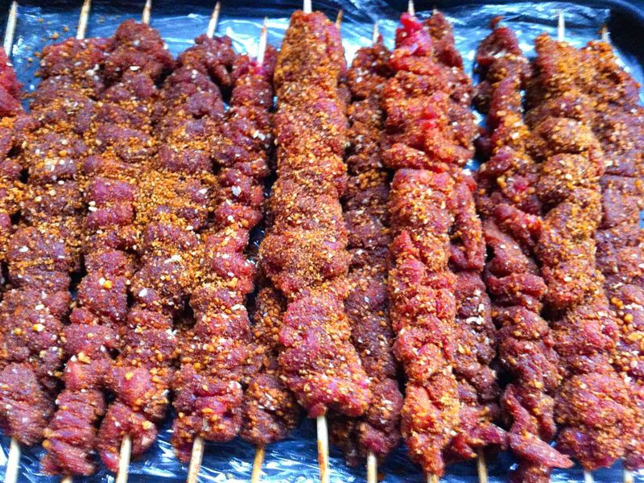
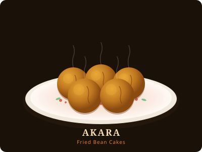
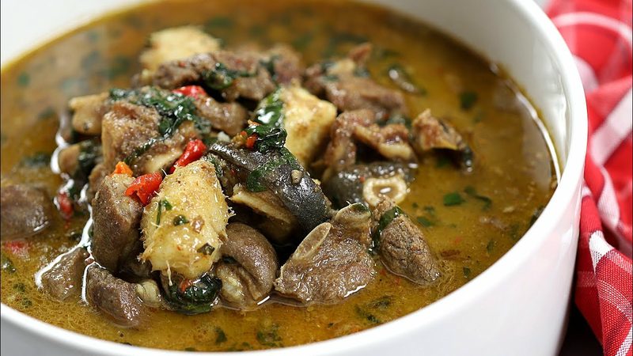
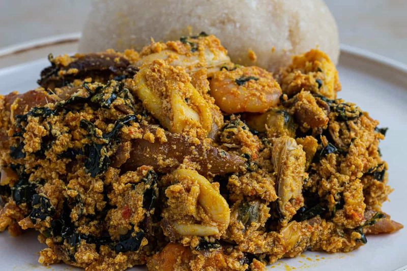
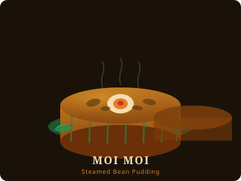
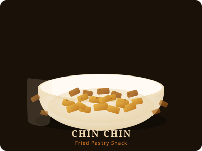

A Visual Taste of Lagos
Eight dishes that define the city's street food culture.






A City Built on Street Food
Lagos street food is inseparable from the rhythm of the city itself. For centuries, hawkers and roadside vendors have been the backbone of how millions of Lagosians eat — from the early-morning Akara seller outside a school gate to the late-night Suya mallam with his glowing charcoal grill on a busy junction.
Rooted in Yoruba, Igbo, and Hausa culinary traditions, Lagos street food is one of Nigeria's greatest cultural crossroads. Dishes like Pepper Soup carry the medicinal wisdom of generations; Puff Puff and Chin Chin reflect the ingenuity of stretching simple ingredients into something joyful.
Today Lagos street food is global — celebrated by food writers, chefs, and diaspora communities from London to Toronto — yet it remains fundamentally, defiantly local.
Etiquette & Culture
Eight things every Lagos street food eater should know.
Neighbourhood Guide
Where to go for what across Lagos.
| Neighbourhood | Known For |
|---|
Insider Tips
Hard-won advice from people who eat this way every day.
- Always try a small portion first before committing to a full plate.
- The best Suya spots are often away from main roads — follow the smoke.
- Morning Akara is always better fresh. If it's been sitting, skip it.
- Eba and Egusi from a bukas (roadside eatery) will almost always beat restaurant versions.
- Boli paired with ube (African pear) is seasonal — worth timing your visit for it.
- Ask locals: "Where do you eat?" They will never steer you wrong.